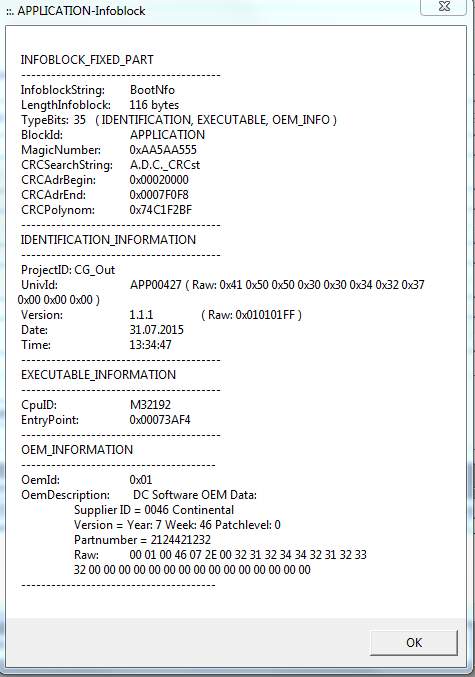

Mi 21.09.2016 09:11
IQFparam_MaxRefAngleGradient_LC_fac
IQFparam_MaxRefAngleGradient_noLC_fac
LatCtrlInp.Maneuver.ManeuverProgress
AD_Lateral_Controller_U.ManeuverProgress
AD_Lateral_Controller_B.LAT_Switch
Mo 05.10.2015 17:53
APP00438 mit Änderung mit Dämpfung 0.001
Bis zur Präsentation auf dem Auto

VPU2 CG_OUT APP00407 11.03.2015 12:32
Fr 10.04.2015 APP00411 27.03.2015 12:41
VPU4 CG_IQF APP00373 22.01.2015 9:50
Fr 10.04.2015 APP00380 26.03.2015 11:23